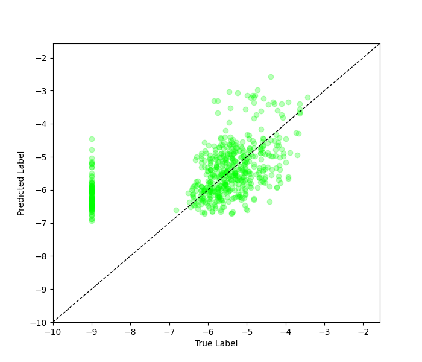

Using imbal.metric In Model Regression#
In model regression, metrics can be used to track model performance.
Keras includes a variety of metric object, and imbal provides several
additional metrics for use, a full list of which can be found on
this page. This tutorial will explain some
of the ways to use metrics, along with code examples. This tutorial uses the code in the
Balanced Fit with Validation tutorial as a foundation.
All the source code in this tutorial can be found at imbal/tutorials/SDO/regression/metrics.py.
Common Regression Metrics#
Some common regression metrics that are used are listed below, with links to their documentation.
How to use Metric objects#
When using wither keras or imbal Metric objects in your program, there are two
main places in your code where you will use them.
Passing the metrics into
Model.compile, in which case the metrics will be monitored during trainingUsing the Metric object directly, after training your model, to compute metrics on your test set.
Some considerations should be made when deciding when to use Metric objects. For example, any metric passed to
Model.compile will be computed every single epoch, for both the training and validation sets (if a validation
set is provided). This can be time-consuming if the computation required to compute the metric is already
inherently time-consuming, or if you are passing multiple metrics to Model.compile. For this reason, we recommend
either passing a single metric to Model.compile, or no metrics at all. The metric(s) passed to Model.compile should
only be those metrics, other than your loss function, which you are considered with monitoring during training.
Necessary Files#
All the source code in this tutorial can be found at
imbal/tutorials/SDO/regression/metrics.pyThe training data for this tutorial can be found at
imbal/tutorials/data/SDOBenchmark/trainingThe test data for this tutorial can be found at
imbal/tutorials/data/SDOBenchmark/test
Splitting Data for Analysis#
When working with imbalanced regression data, it is often useful to split the test data into two groups: frequent data and rare data. Doing so will allow you to individually analyze how a model performs on each category of data. It is often the case that a model will perform quite well on data that is frequent, but struggle on data that is rare.
To split our data into these groups, we first ensure our data is loaded into a NumPy array. Then, we can make use of the fact that NumPy allows for arrays to be indexed by some boolean mask, which can be a condition such as the label being above some critical threshold. For the SDOBenchmark data, any sample whose log peak flux is greater than -4 will be considered a rare sample.
# The line below generates a boolean mask for the labels of our test samples, such that samples whose label
# (log peak flux) is greater than -4 are filtered out
test_rare_mask = y_test > -4
# We can invert the mask using a tilde to obtain the mask for frequent samples
test_frequent_mask = ~test_rare_mask
print('Number of test samples with log10 flux < -4:', np.sum(test_frequent_mask.astype(np.int32)))
print('Number of test samples with log10 flux >= -4:', np.sum(test_rare_mask.astype(np.int32)))
The code above should generate the following output:
Number of test samples with log10 flux < -4: 586
Number of test samples with log10 flux >= -4: 14
Then, we can pass our test data to our model, and split the predicted results into the rare and frequent groups.
# Predict on test data
test_predictions = model.predict(x_train)
test_predictions_rare = test_predictions[test_rare_mask] # Mask rare test data
test_labels_rare = y_test[test_rare_mask] # Mask predictions on rare test data
test_predictions_frequent = test_predictions[test_frequent_mask] # Mask frequent test data
test_labels_frequent = y_test[test_frequent_mask] # Mask predictions on frequent test data
Note that since we know each index of the predictions corresponds to the sample at the same index in our test samples, we can apply the same masks to both the predictions and our original samples.
Now that we have our predictions, and have split them by their frequency, we can pass the labels and predictions to our metric objects to gain insight into the model’s performance. It is worth noting that Metric objects typically store their results in a TensorFlow Tensor object. Therefore, we will convert the tensor to a NumPy scalar in order to print just the metric itself, without any of the additional information about the tensor it was stored in.
from keras import metrics
mse_overall = metrics.MeanSquaredError()
mse_overall.update_state(y_test, test_predictions)
print('Overall MSE:', mse_overall.result().numpy())
mse_frequent = metrics.MeanSquaredError()
mse_frequent.update_state(test_labels_frequent, test_predictions_frequent)
print('Frequent sample MSE:', mse_frequent.result().numpy())
mse_rare = metrics.MeanSquaredError()
mse_rare.update_state(test_labels_rare, test_predictions_rare)
print('Rare sample MSE:', mse_rare.result().numpy(), '\n')
mae_overall = metrics.MeanAbsoluteError()
mae_overall.update_state(y_test, test_predictions)
print('Overall MAE:', mae_overall.result().numpy())
mae_frequent = metrics.MeanAbsoluteError()
mae_frequent.update_state(test_labels_frequent, test_predictions_frequent)
print('Frequent sample MAE:', mae_frequent.result().numpy())
mae_rare = metrics.MeanAbsoluteError()
mae_rare.update_state(test_labels_rare, test_predictions_rare)
print('Rare sample MAE:', mae_rare.result().numpy(), '\n')
pcc_overall = metrics.PearsonCorrelation()
pcc_overall.update_state(y_test, test_predictions)
print('Overall PCC:', pcc_overall.result().numpy())
pcc_frequent = metrics.PearsonCorrelation()
pcc_frequent.update_state(test_labels_frequent, test_predictions_frequent)
print('Frequent sample PCC:', pcc_frequent.result().numpy())
pcc_rare = metrics.PearsonCorrelation()
pcc_rare.update_state(test_labels_rare, test_predictions_rare)
print('Rare sample PCC:', pcc_rare.result().numpy(), '\n')
imbal.regression.plot_true_vs_predictions(
y_test,
test_predictions,
save_figure='sample-sdo-metrics-label-vs-prediction-plot.png'
)
The code above should yield output similar to the following:
Overall MSE: 1.7918983
Frequent sample MSE: 1.8190947
Rare sample MSE: 0.6535388
Overall MAE: 0.89384747
Frequent sample MAE: 0.9010623
Rare sample MAE: 0.5918519
Overall PCC: 0.574065
Frequent sample PCC: 0.5519897
Rare sample PCC: 0.4519744
Lastly, the imbal.regression.plot_true_vs_predictions function should produce the following plot:
